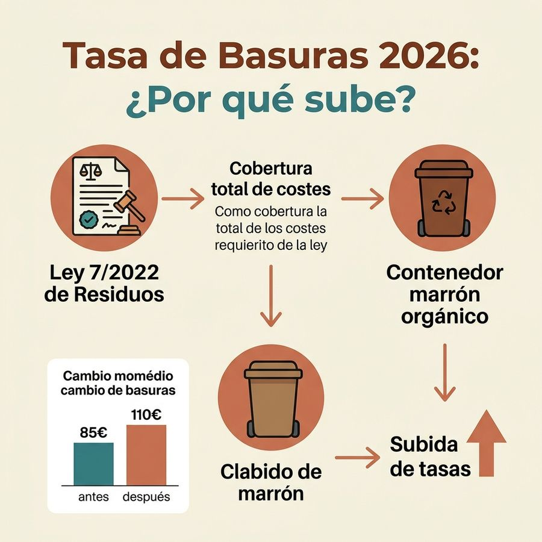

¿Qué es la tasa de basuras?
La tasa de recogida de residuos sólidos urbanos —comúnmente llamada tasa de basuras— es un tributo municipal que los ayuntamientos cobran por el servicio de recogida, transporte y tratamiento de los residuos generados en los inmuebles de su término municipal.
A diferencia del IBI, que es un impuesto sobre la propiedad, la tasa de basuras es una contraprestación directa por un servicio. Cada ayuntamiento fija su importe en la ordenanza fiscal correspondiente, y las diferencias entre municipios son grandes porque la ley no fija cuantías: fija los principios con los que hay que calcularlas.
¿Quién paga la tasa de basura en un alquiler?
Esta es la pregunta más frecuente entre propietarios e inquilinos. La respuesta legal es inequívoca: el sujeto pasivo frente al Ayuntamiento es siempre el propietario del inmueble.
Sin embargo, la Ley de Arrendamientos Urbanos (LAU) permite que el contrato de alquiler traslade el pago al inquilino, siempre que figure expresamente en el contrato. Si no aparece en el contrato, el propietario no puede repercutirlo.
| Situación | ¿Quién paga ante el Ayuntamiento? | ¿Quién puede asumir el coste? |
|---|---|---|
| Vivienda en propiedad | Propietario | Propietario |
| Alquiler sin cláusula expresa | Propietario | Propietario (no puede repercutirlo) |
| Alquiler con cláusula de traslado | Propietario | Inquilino (por acuerdo contractual) |
| Local comercial | Titular actividad | Titular actividad |
Por qué ha subido la tasa de basuras: qué obliga exactamente la ley
El artículo 11.3 de la Ley 7/2022, de residuos y suelos contaminados para una economía circular, obliga a las entidades locales a establecer una tasa —o, en su caso, una prestación patrimonial de carácter público no tributaria— con tres condiciones: específica, diferenciada y no deficitaria. Debe además permitir implantar sistemas de pago por generación y reflejar el coste real, directo o indirecto, del servicio.
Cada uno de esos adjetivos tiene consecuencias concretas en el recibo:
- Específica y diferenciada: la tasa de residuos no puede ir escondida dentro de otro tributo ni cobrarse junto al agua como un concepto indistinguible. De ahí que en muchos municipios haya aparecido un recibo nuevo donde antes no había ninguno.
- No deficitaria: los ingresos tienen que cubrir el coste del servicio. Muchos ayuntamientos venían financiando la recogida con sus ingresos generales, así que el ajuste ha sido una subida de golpe, no un incremento gradual.
- Que refleje el coste real: la ley enumera qué debe computarse —recogida, transporte y tratamiento, vigilancia de esas operaciones, mantenimiento y vigilancia posterior al cierre de los vertederos, campañas de concienciación— y también qué debe restarse: los ingresos de la responsabilidad ampliada del productor y los de la venta de materiales y energía.
- Pago por generación: es la dirección a la que apunta la norma. Por eso las ordenanzas nuevas reparten por superficie, empadronados, zona o aportación real en lugar de cobrar una cuota única.
El plazo era de tres años desde la entrada en vigor de la ley. La ley se publicó en el BOE el 9 de abril de 2022 y entró en vigor al día siguiente, así que el plazo venció el 10 de abril de 2025: de ahí la oleada de ordenanzas nuevas en 2025 y 2026.
A la obligación legal se suma un factor de coste: esa misma recogida separada de biorresiduos exige contenedor propio, ruta propia y planta de tratamiento, y encarece el servicio que la tasa tiene que cubrir. La ley admite expresamente el compostaje doméstico o comunitario como forma de recogida separada, lo que explica que muchas ordenanzas lo bonifiquen.
Cómo reclamar un recibo incorrecto de basuras
Si recibes un recibo erróneo (importe incorrecto, inmueble vacío, duplicidad, titularidad equivocada), tienes varios cauces de reclamación:
- Recurso de reposición ante el Ayuntamiento: plazo de 1 mes desde la notificación.
- Reclamación económico-administrativa ante el TEAR: plazo de 1 mes desde la resolución (o desde el silencio administrativo).
- Recurso contencioso-administrativo: última instancia, requiere abogado.
Cuánto se paga en tu municipio: por qué aquí no hay una tabla
Es la pregunta que más nos llega y la única de todo el sitio que no podemos responder con una cifra. En el resto de tributos municipales —IBI, plusvalía, impuesto de circulación, ICIO— publicamos el dato de cada uno de los 134 municipios porque existe una fuente estatal que lo recoge. Con la tasa de residuos no existe, y merece la pena explicar por qué: dice bastante sobre cómo está organizada la información fiscal municipal en España.
No hay ningún registro estatal de tasas de residuos
La Ley 7/2022 obliga a aprobar la tasa, pero en su artículo 11.5 solo exige a las entidades locales comunicarla —junto con los cálculos con los que la han construido— a las autoridades competentes de su comunidad autónoma. No al Estado. No hay, por tanto, una base de datos nacional equivalente a la que sí existe para los impuestos locales.
Nuestra fuente habitual, la consulta de información impositiva municipal del Ministerio de Hacienda, cubre exactamente eso: impuestos (IBI, IAE, IVTM, ICIO e IIVTNU). Las tasas quedan fuera de su ámbito, porque no son impuestos: son la contraprestación de un servicio.
Eso deja una única vía para cada municipio: su ordenanza fiscal. Lo intentamos y estos fueron los obstáculos, uno por uno: las ordenanzas se publican casi siempre como PDF colgado de la web municipal o del boletín provincial, no como texto; varias sedes electrónicas devolvían errores de servidor en la propia página de la tasa; algunos boletines autonómicos presentaban problemas de certificado que impiden una descarga fiable; y las búsquedas devuelven noticias de prensa, que no sirven como fuente: no dicen a qué epígrafe corresponde la cifra, si incluye impuestos indirectos o si sigue vigente.
Cómo encontrar la tarifa de tu municipio en tres pasos
- Busca la ordenanza fiscal de la tasa de residuos en la web de tu ayuntamiento, normalmente en el apartado de «ordenanzas fiscales» o «normativa». El nombre exacto varía: «tasa por la prestación del servicio de recogida de basuras», «tasa de gestión de residuos», «prestación patrimonial de carácter público no tributario por el servicio de residuos».
- Ve al cuadro de tarifas y localiza el epígrafe de viviendas. Ahí verás si tu municipio cobra un importe único o lo reparte por superficie, por valor catastral, por zona, por número de personas empadronadas o por generación real de residuos.
- Comprueba las reducciones. Si no encuentras la ordenanza, el importe exacto que te han girado figura en el recibo, en el concepto de residuos, que puede venir en el mismo documento que el IBI o por separado.
Si tu municipio pertenece a una mancomunidad o consorcio de residuos, es posible que la tasa la apruebe y la cobre esa entidad y no el ayuntamiento: en ese caso la ordenanza está publicada a su nombre.
Si tienes la ordenanza, mándanosla
Es la vía por la que este hueco se puede ir cerrando municipio a municipio: si nos envías el enlace a la ordenanza o al anuncio del boletín provincial, publicamos la tarifa citando la fuente y con su fecha. Aportar la ordenanza de mi municipio →
Mientras tanto, lo que sí puedes comparar entre municipios con datos oficiales está en el comparador de los 134 municipios: tipos de IBI, año de los valores catastrales, ICIO, impuesto de circulación y plusvalía.